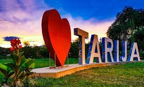

MI CIUDAD
Yo crecí en la ciudad de Tarija por eso la considero como mi hogar y mi ciudad natal,
actualmente vivo en la ciudad de Sucre por mis estudios.
Comidas tipicas
- Saice
- Ranga Ranga
- Arvejada
- Chancao de gallina
- Picante de pata
- Empanadas blanqueadas
Lugares turisticos
- Museo Paleontologico
- Plaza Luis Fuentes
- La Casa Vieja
- Bodega Casa Real
- Casa Dorada
- Chorros de Marquiri
